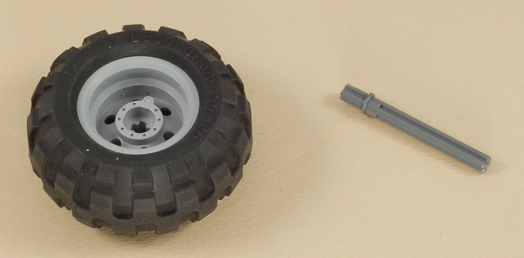
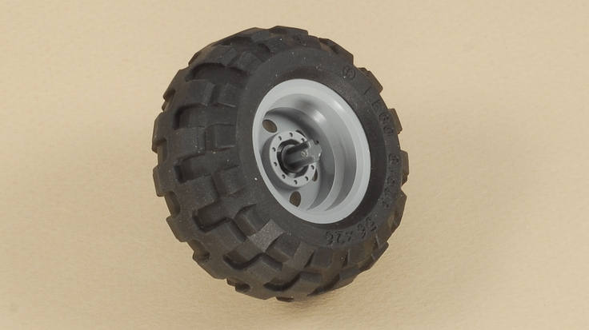
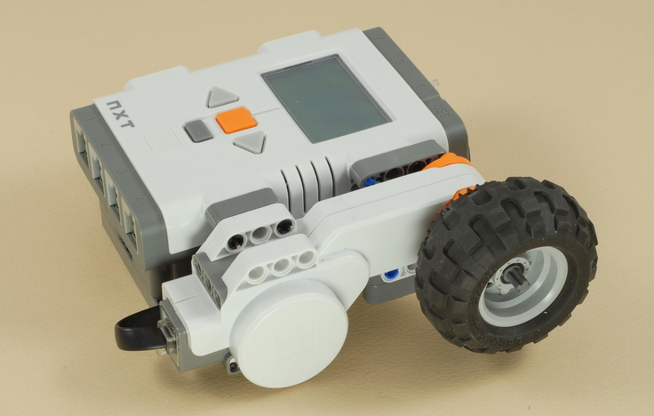

Fun Projects for your LEGO® MINDSTORMS® NXT!
|
|
Fun Projects for your LEGO® MINDSTORMS® NXT! |
| Area and Volume Calculator |
|

1-3
Start by building the Dial Remote Control. Click the picture for building instructions.
|
|
4



| Area
and Volume Calculator Programming The Area_Vol_Calc program does a 3-step length/area/volume measurement and calculation. Roll the wheel along the path to measure it (push down to get some traction so the wheel doesn't slip), and press the Enter button when finished to go on to the next step. The simpler program Length_Calc does a simple length calculation only, so you can start by studying this one if you want to understand how it works. A complication with these programs is doing decimal calculations using only the integer numbers and "integer math" calculations available in version 1.X of the NXT programming system. For example, there are 2.54 cm per inch, so to convert from in to cm, you could multiply by the decimal number 2.54 if decimal numbers were allowed. So how do you do this without decimals? Answer: cm = (in x 254) / 100. The Area_Vol_Calc program shows a few other tricks, including rounding and displaying a decimal number on the screen, using only integers. The newer NXT-G 2.0 software supports "floating point" (non-integer decimal) numbers and calculations, which would make this much all much easier, but these programs show how to do it the "integer" way. |
Challenges
|
|
Copyright
©
2007-2009 by Dave Parker. All rights reserved. |